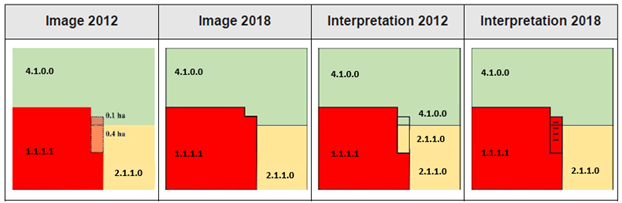

Riparian Zones LC/LU and change 2012-2018 - Product User Manual
Copernicus Land Monitoring Service
Riparian Zones, Land Cover/Land Use classification, EEA-38 + UK, Strahler river order, Mapping and Assessment of Ecosystems and their Services, Very High-Resolution satellite imagery, Change mapping 2012-2018, Minimum Mapping Unit, Quality Assurance procedures, Parent Scene Identification Layer
Contact:
European Environment Agency (EEA)
Kongens Nytorv 6
1050 Copenhagen K
Denmark
https://land.copernicus.eu/
1 Executive summary
Copernicus is the European Union’s Earth Observation (EO) Programme. It offers information services based on satellite earth observation and in situ (non-space) data and is an integrated part of European Environment Agency’s (EEA’s) strategy to improve environmental information. These information services are freely and openly accessible to its users through six thematic Copernicus services (atmosphere monitoring, marine environment monitoring, land monitoring, climate change, emergency management and security).
The Copernicus Land Monitoring Service (CLMS) provides geographical information on land cover and its changes, land use, vegetation state, water cycle and earth surface energy variables to a broad range of users in Europe and across the world in the field of environmental terrestrial applications. CLMS information is based on space data combined with other sources. It addresses a wide range of policies such as environment, agriculture, regional development, transport and energy at EU level, and European commitments to International Conventions.
CLMS is jointly implemented by the European Environment Agency and the European Commission (EC) DG Joint Research Centre (JRC).
The Priority Area Monitoring (previously known as Local Component) is coordinated by the EEA as part of CLMS and aims to provide specific and more detailed information that is complementary to the information obtained through the pan-European component. It focuses on different “hotspots”, i.e., areas that are prone to specific environmental challenges and problems. It is based on Very High-Resolution (VHR) satellite imagery in combination with other available datasets (high and medium resolution images) over the pan-European area.
In Europe, the EC has proposed a strategy to lead the world by example in reversing biodiversity loss, and in helping to ensure that by 2050 all of the world’s ecosystems are restored, resilient, and adequately protected: the European Biodiversity Strategy. In the previous version of this strategy, EU Biodiversity Strategy 2020, one of the targets were to focus on a better protection and restoration of ecosystems and the services they provide, and greater use of green infrastructure. As a consequence of this, riparian zones (RZ) started being mapped and monitored within the Copernicus program. Riparian Zones is a product within the Copernicus Land Monitoring Service’s Priority Area Monitoring component and was first created during the initial phase of the Copernicus Initial Operations in 2011-2013 [1].
The Riparian LC/LU product provides a detailed LC/LU dataset for areas along a buffer zone of selected rivers covering EEA-38 + UK (i.e., the 38 EEA member and cooperating countries and the UK). This product provides a consistent, very high-resolution, delineation and characterisation of the riparian zones of major and medium sized rivers. For the reference year 2012, it is based on optical 2,5 m spatial resolution satellite imagery from the European Space Agency (ESA) Data Warehouse (DWH). The VHR_IMAGE_2018 dataset, with resolutions between 2 and 4 m from different sensors, is the main input for the reference year 2018. The project produces the change mapping between the reference years, 2012 and 2018, and the status production for 2012 and 2018. It covers the whole extension of the selected rivers of Strahler 2-9 levels.
The mapping of LC/LU along a buffer zone of selected rivers had at the start as one of its main objectives to support the mapping and assessment of ecosystems and their services (MAES) [2] [3], as part of the EU Biodiversity Strategy to 2020.
The initial Riparian Zones map was available for more than 550.000 km² of EEA-39 territory and covered modelled buffer areas around selected medium and large size rivers with Strahler [4] numbers from 3–8. The mapping was done for the reference year 2012 with a temporal coverage of satellite input data between 2010 and 2014. The production for Strahler from 3-8 was finalized in 2015. In 2017/2018 a geographic extension covering buffered (250 m) rivers with Strahler number 2 was performed, extending the total area to 805.177 km², and including the implementation of the newest version of EU-Hydro (public beta 0.9) that led to minor reclassification of larger rivers to Strahler level 9.
In 2017, the nomenclature was revised with the aim to harmonize the Local Component products (mainly Riparian Zones, Natura 2000, Urban Atlas, and Coastal Zones products) while maintaining user requirements for products. The nomenclature of the RZ data is based on the MAES systematics and is reflected in the CODE values of the data The revision and update of the new Riparian Zones (RZ) nomenclature led to a simplification of some classes, decreasing the CODE level 4 of the nomenclature in a coherent and non-redundant way (previous nomenclature: 79 classes / new nomenclature: 56 classes). In 2021, the class codes and class names were reorganized and updated a further time in order to, again, achieve better harmonization of the nomenclatures of the CLMS Local Component products while the number of 56 classes (shown in Table 3) as well as the class definitions were maintained.
2 Background of the document
2.1 Who is this guide for?
Product User Manual is the primary document that users are recommended to read before using the product. It provides an overview of the product characteristics, product methodology and workflows, user requirements and example/potential use cases, information about the quality assessment checks and their results as well as product technical support.
2.2 Content and structure
The document is structured as follows:
Chapter III recalls the user requirements
Chapter IV presents potential product application areas and/or example use cases
Chapter V presents product description (product file naming convention and format(s), product content and characteristics)
Chapter VI provides a description of the product methodology and workflows
Chapter VII summarizes the quality assessment and/or validation procedure and the results
Chapter VIII provides information about product access and use conditions as well as the technical product support
Chapter IX lists references to the cited literature
3 Review of user requirements
Riparian zones (RZ) refer to areas adjacent to water bodies, such as rivers, water streams and lakes. Natural riparian zones are some of the most diverse, dynamic, and complex biophysical habitats on the terrestrial portion of the planet. These areas constitute biological and physical systems with unique soil and vegetation characteristics. Here nutrients, water and sediments mix, creating optimal conditions for the development of plant and animal communities that benefit from the productivity of these ecosystems. [1] [5] [6] [7] [8]
RZ provide a wide range of ecological benefits, for instance:
the recycling of nutrients and other chemical reactions which in turn benefit plant growth
mitigates erosion effects caused by flooding events [3, 4, 5]
they are hotspots for higher biodiversity of aquatic and terrestrial species
the recycling of organic matter
the improvement of water quality
the filtering/buffering of sediment
Worldwide, riparian zones have been significantly modified and degraded due to human activity. Fragmentation of these areas has led to a considerable loss of several plant and animal species. The reason for this is the loss of their habitat and the introduction of competing invasive species [9]. Alteration of the riparian zones inevitably leads to the loss of the ecological benefits that these ecosystems provide.
In Europe, the EC proposed a strategy to lead the world by example in reversing biodiversity loss, and in helping to ensure that by 2050 all of the world’s ecosystems are restored, resilient, and adequately protected: the European Biodiversity Strategy. In the previous version of this strategy, EU Biodiversity strategy 2020, one of the targets were to focus on a better protection and restoration of ecosystems and the services they provide, and greater use of green infrastructure. Because of this, RZ started being mapped and monitored within the Copernicus program, which is the European initiative for Earth Observation and monitoring. “Riparian Zones” is a product within the Copernicus Land Monitoring Service’s local component and was first created during the initial phase of the Copernicus Initial Operations in 2011-2013 [1].
4 Product application areas and/or examples of use cases
Mapping and modelling of riparian zones is important for the assessment and evaluation of the changes in these areas over time. This is true both for areas where ecosystem restoration measures are implemented, to measure the success, but also for existing areas and identifying changes, known or unknown, in the surrounding environment that have a negative impact on the riparian ecosystem, in order to counteract these in time to prevent serious damage.
The Riparian Zones product was expected to support the MAES initiative (Mapping and Assessment of Ecosystems and their Services) and link to other European policy areas and initiatives such as;
the Water Framework Directive
the Habitats and Birds Directives including the Natura 2000 network
the Floods Directive
the EC’s Green Infrastructure strategy
the Blueprint to safeguard Europe’s waters
the Intergovernmental Science-Policy Platform on Biodiversity and Ecosystem Services (IPBES)
The latter stresses the importance and need to strengthen measures to help protect the water resources and become more resource (including water) efficient within the EU, encouraging measures such as the restoration of wetlands and floodplains to increase natural water retention.
The Riparian Zones product could greatly benefit the work of the IPBES in their assessments on the state of biodiversity and of the ecosystem services it provides to society [1].
The following subchapter will highlight some potential uses for the Riparian Zones product, and also present examples of where it has already been used.
4.1 Public and private sector and private interest groups
Public sector
The state of riparian zones and their development provides information useful to governments in terms of informing on the state of biodiversity, water quality and the successes or failures in means of improving these by use of nature-based solutions. The Riparian Zones product can facilitate the identification of areas where challenges possibly related to degraded riparian zones, overlap with areas where riparian zones should or could be present. This can inform efforts in either reintroducing riparian zones or improving existing riparian zones and can highlight where the benefit of restoring riparian zones would be greatest, see more in section Use case: Ecosystem types of Europe. Well managed riparian zones can hinder pesticides, pollutants, and excessive nutrients from reaching water streams and downstream water sources. This in turn improves the quality of water sources and streams by limiting eutrophication and reducing the amount of treatment required for water in water treatment plants. Reduced eutrophication improves the oxygen levels and habitats for aquatic life and thus improves biodiversity as well as the water quality overall, see more in section Use case: Improving water quality and protecting against flooding.
Through sustainable management of water sources, governments can assist local communities, support the private sector and encourage important synergies between healthy ecosystems and human well-being. The Riparian Zones product can aid adaptive management with appropriate monitoring and assessment on the current state.
Healthy riparian zones also retain water masses during flooding and other high-water events, reducing the energy and velocity of water which impedes the risk of flooding damage to infrastructure downstream but may also play a role in limiting wild fires. The riparian zones maintain stable river banks by means of vegetation roots, which prevents sediment build-up and extreme bank erosion, which otherwise could cause damages downstream, see more in section Use case: Potential Flood Plains and Use case: Improving water quality and protecting against flooding.
Riparian zones in addition provide recreational values such as canoeing, hiking, camping, bird watching and fishing, which are important for the wellbeing of inhabitants and may attract ecotourism, although care should be taken to combine these activities with keeping the riparian zone as undisturbed as possible by traffic and in a naturally vegetated state, see more in section Use case: Ecosystem services and informing policies and conservation measures and Use case: Biodiversity and birds.
Riparian zones also provide educational opportunities [1], bringing students of all ages into nature to observe and learn about the benefits provided by these areas and how best to aid in their management and preservation, see section Use case: Ecosystem services and informing policies and conservation measures.
Private sector
The private sector could utilize the information available through the Riparian Zones product by adapting their businesses to protect and improve nearby riparian zones to increase the ecological value of their land as well as its sustainability. Private agricultural and farming areas could utilise the information of the benefits that riparian zones provide, such as increased biodiversity and habitats for, among other, pollinators which are beneficial for crops [10]. Other benefits may include reduced impacts from pest species, resulting in less need for use of pesticides [11] and thus a higher water quality. The private sector such as consultancies can use the freely available Riparian Zones product to improve the quality of their services. Well-informed decisions made in terms of different kinds of development increase the likelihood of holistic and sustainable solutions.
The Riparian Zones product could inform the private sector, as well as the public, on where action in relation to other interventions in infrastructure, development or restoration projects, can achieve multiple benefits and synergies in for example quality improvement of biodiversity, water, habitats. Additionally the Riparian Zones product could be used to make more detailed assessments on the state of the riparian zone through field research. With this knowledge informed and targeted efforts to improve the ecosystem services can be implemented. Private companies such as map providers could also incorporate the riparian zones data into their existing maps to meet demands from certain interest groups but also raise awareness of its importance in the general public.
Private interest groups
Civil society can, through various interest organisations, NGO’s, academic organisations, scouts and social movements and campaigns – benefit from the information freely available through the Riparian Zones product, to mobilise or inform the general public on the importance of riparian zones and the benefits they provide. This may in turn spark an increased incentive for each citizen to take measures where they are able, to protect and improve these areas. Private interest groups in bird watching and fishing could use the provided information from the Riparian Zones product to localise and improve good breeding grounds and migration routes for both fish and birds. Extreme temperatures are moderated in riparian zones due to large mature trees and overhanging vegetation, fallen trees also provide shelter and habitat for fish and insects. This creates favourable habitats for both water- and land-living species. [12] Disturbed or degraded riparian zones offer possibilities for restoring wildlife habitat functions. Wildlife management groups might use the information in the Riparian Zones product for researching hot spots for wildlife and plant migration, which in part ties together fragmented habitats and allows for healthier populations of otherwise perhaps threatened species. The information provided can be used in combination with requirements for specific species in terms of restoring threatened species to healthy populations. Certain wildlife species for example require riparian zones of significant widths to breed, migrate between habitats, feed, nest and disperse to set up new territories [11] [12]. Other species such as fish require the stream to have a minimum number of stream crossings, and where necessary bridges rather than culverts, to migrate and breed. Wider riparian zones in general harbours a wider range of wildlife species, and the larger wildlife species as well as birds generally require the widest riparian zones. The Riparian Zones product can thus be used in informing preservation groups to protect and re-establish populations of certain species of interest, by locating either suitable existing riparian zones where the species occur naturally to reintroduce these species there – or in order to inform interventions to widen existing riparian zones to make them suitable habitats for native species which have decreased in number of even disappeared altogether. Native ecosystems with high biodiversity and low degree of human disturbances, as well as a wide and complex riparian zone, have been shown to be more robust against the introduction of invasive species [13] [14], and support a number of ecosystem services which invasive species will not. However, high biodiversity may also indicate a high introduction and establishment of invasive species, called propagule pressure, and suggests a higher level of invasion of an area. A high number of introduced and established invasive species is for most species, plants and terrestrial animals, linked to high degree of human disturbance. [15] Specific interest groups such as the Intergovernmental Science-Policy Platform on Biodiversity and Ecosystem Services (IPBES) could very well use the product for in their assessments on the state of biodiversity and of the ecosystem services it provides to society. IPBES is an independent intergovernmental body established by States to strengthen the science-policy interface for biodiversity and ecosystem services for the conservation and sustainable use of biodiversity, long-term human well-being and sustainable development.
Pressure from interest groups can in turn influence policy making and political decision-making.
The research community could use the product for identifying hot spots for research on biodiversity, ecosystem services, migration patterns, climate change adaptation, climate change impacts and theirs impacts on riparian zones. The Riparian Zones product could be an interesting tool in assessing riparian zones’ ability to adapting to or counteracting climate change effects as it is not clear as of today if these areas are particularly vulnerable to climate change due to their exposure; or if they are resilient due to their evolution during highly variable climates and environments [16].
4.2 Use cases
4.2.1 Use case: Potential Flood Plains
The European Environment Agency has produced a report which aims to provide an overview of the different aspects of floodplain management and to provide examples of the services that are important for the healthy functioning of floodplains [6]. The Riparian Zones product has been used as input to this report.
Floodplains cover 7% of Europe’s landmass. These are part of its natural capital, covering up to 30% of the terrestrial Natura 2000 site areas. Studies have shown that 70-90% of floodplains have been environmentally degraded. [6] Many European policies are relevant for floodplains and flood prone areas, for example the Water Framework Directive, the Habitats and Birds Directives, and the Floods Directive. The floodplains represent the transition between land and freshwater ecosystems, with hydrology, soil and biotic conditions strongly influenced by stream water and flooding. Additionally they provide a range of important ecosystem services such as nutrient and water retention, flood control, carbon sequestration, a diversity of aquatic and wetland habitats, but they are under pressure. [17] Riparian zones constitute an integral part of flood plains.
The severe degradation worldwide of freshwater ecosystems has posed a major threat to ecosystem services of floodplains, riparian zones and vegetation. This negative trend that has continued to increase for centuries due to changed land use patterns and might even be intensified because of climate change [10]. Therefore, restoration of floodplains and riparian zones would prove an important measure to mitigate the effects of such degradation.
The Riparian Zones product can be used to inform efforts to show that natural and restored floodplains provide an alternative to structural measures for providing flood protection, and at the same time support achieving higher quality ecosystem services like improved water quality, improved conditions for biodiversity conservation and higher recreational value. [6]
4.2.2 Use case: Improving water quality and protecting against flooding
Riparian zones provide an important function for waterways as a buffer between catchment areas and water recipients, through filtering catchment water from pollutants or excessive nutrients [13]. Restoring and improving riparian zones can act as an important measure in improving water quality and ecosystems in for example agricultural areas or otherwise managed land areas, in alignment with the Water Framework Directive (WFD) [18] but also target 7 and 10 in First draft of the post-2020 global biodiversity framework [19] and the Sustainable Development Goal (SDG) 6 [20].
In addition, the riparian zones act a protection against flooding events, working towards target 11 in First draft of the post-2020 global biodiversity framework [19]. Human development in riparian zones has put pressure on the environmental roles that floodplains and riparian zones play during flooding events, and human made structural protections against floods in these areas have further exacerbated the problems [6]. With increasing populations living in riparian zones and more and more extreme weather events occurring, the need for restoration, protection and sustainable management of still functioning riparian zones increases, to protect more regions and people from the imminent risk of floods [21], in alignment with the Floods Directive [22].
To restore riparian zones, river hydromorphology and sustainable river management, and not least to overbridge the gap left in different hydromorphological assessment policies concerning the importance of riparian vegetation, tools for assessment of the state of riparian vegetation are needed [23]. Using the Riparian Zones product to compare the extent of riparian zones from one year to another, can provide an indication of the progress in improving the ecosystem services from riparian zones, but also the progress in the protection against climate change impacts and resilience towards flooding events [6].
4.2.3 Use case: Ecosystem types of Europe
The Riparian Zones product has been used as input contributing to a better biological characterization of terrestrial and marine ecosystems across Europe (EEA-39), through the dataset “Ecosystem types of Europe” [24]. It represents probabilities of EUNIS (European Nature Information System) habitat presence in terrestrial, freshwater and marine ecosystems. The work supports the Mapping and Assessment of Ecosystems and their Services (MAES), Action 5 of Target 2 the EU Biodiversity Strategy to 2020, established to achieve the Aichi targets of the Convention of Biological Diversity (CBD). [25]
4.2.4 Use case: Ecosystem services and informing policies and conservation measures
Riparian zones provide cultural services in the form of for example recreation, aesthetic, spiritual and educational benefits; provisional services in the form of physical products such as for example biomass and genetic resources; and regulation and maintenance services such as for example filtration of pollutants and chemical conditions of freshwaters, carbon sequestration, flow regulation, erosion control, pollination and seed dispersal, pest control, maintenance of nursery populations and habitats, regulation of microclimate and fire effects mitigation. [10] Because of the functions these areas provide in terms of water provision, they are under threat from urbanisation and other human activities and land uses.
The Riparian Zones product may aid in the efforts of monitoring progress in restoring riparian zones due to the improved technique for data collection, which is important both for feedback and guidance on how to evaluate the different strategies applied [26]. Riparian zones are often characterised by inaccessibility and dynamism [26], making a tool for monitoring the development of riparian zones through visual interpretation of vector data and satellite imagery an invaluable tool to assess successes and potential for optimisation in management and restoration efforts.
Many indicators of riparian zone status can be monitored by remote sensing data, as is done in the Riparian Zones product. Examples of these indicators are water level width, riparian zone area, vegetation coverage, river connectivity and natural wetland conservation, which are closely related to riparian vegetation density, bedload transport capacity, flow regulation and biological abundance which are in turn crucial to the physical habitat. [26]
Riparian zones are, despite their importance in water quality and flood mitigation, not specifically mentioned in the EU Floods Directive (FD) or the EU Water Framework Directive (WFD). The management of these dynamic socio-ecological systems require dynamic adaptive policies, and monitoring of riparian zones make an important cornerstone in achieving this. [21] The Riparian Zones product can prove an important aid in achieving policies more specifically targeted at restoring, protecting and optimising management of these areas, to protect habitats and biodiversity as well as the many ecosystem services that these areas provide. Monitoring and assessment are important factors in evaluating the effectiveness of policy making and optimising for the best possible results, given the complexity of the riparian zone ecosystems and interconnections, this aspect proves yet more important.
4.2.5 Use case: Biomass production
Agricultural areas located nearby riparian zones and streams could by own measures improve it by restoring native vegetation and keeping grazing cattle away from the stream to allow for vegetation to settle, stabilise the river banks and strengthen native species and ecosystems while also protecting downstream land from flooding. Used in combination with for example the Common Agricultural Policy (CAP) [27], and its three “specific objectives”1 concerning the environment and climate, useful synergies can be achieved. Additionally, riparian zones adjacent to agricultural land could be used for biomass generation with energy crop cultivations in order to meet the ever-increasing demand for renewable energy sources in climate change adaptation efforts [28]. This would increase the environmental benefits in the riparian zone, whilst maintaining productivity of the agricultural areas and achieving biomass outputs.
4.2.6 Use case: Biodiversity and birds
The vegetation cover and availability of food resources make riparian zones important habitats to many birds [29]. Due to their sensitivity to changes in the environment, birds are sentinel species which allow to detect environmental hazards, providing an early warning of different threats such as pollution, habitat quality, overall biodiversity, or emerging diseases. As climate and weather indicators, birds can be useful tools to monitor the impacts of climate change at large spatial scales. [30] Habitat loss and degradation are the most serious threats to the conservation of wild birds [31].
Thus preserving and restoring riparian zones can provide an important measure to maintain and restore the populations of both native and migrating birds. Additionally long-term spatial variation on bird migration represents an interesting approach to indirectly identify environmental consequences of climate change across the globe. [30]
The connection between bird watching and the recreational attractiveness of riparian zones provides an opportunity for the Riparian Zones product to support the aim of the Copernicus Bird Migration project, which is in part to “raise awareness among the general public of the effects of climate variations and the power and range of climate data available, to ultimately inform decision-making”. [30]
Several habitats and species listed in the Habitats Directive (92/43/EEC) are found on active floodplains, as are birds listed within the Birds Directive (2009/147/EC). Restoring riparian zones would likely improve the conservation status assessments of these habitats and species, while also possibly increase connectivity between habitats and counteract habitat fragmentation [28]. Riparian forests are important nature types for providing connection between and counteracting fragmentation of Natura2000 woodland habitats [32] but also by providing ecological corridors for animals and plants which is important in conservation and nature management efforts [33]. This is especially important in areas where there is artificial land uses and agricultural areas which the forest species need to migrate across [32] but also for implementing restoration or conservation efforts through policy-making, or conducting habitat assessments [33] [1]. The Riparian Zones product has also been used to evaluate its suitability to measure the longitudinal connectivity of riparian forests and the capacity of riparian zones to provide Ecosystem Services (ES) [34].
Invasive species are positively correlated with river management practices where the velocity, water depth and the distance to the water source is altered [13], thus advocating for water management practices which promote a return towards the original ecosystem, including riparian zones, may promote the biodiversity in native species [6]. This also aligns with target 6 in the First draft of the post-2020 global biodiversity framework [19] “A New Global Framework for Managing Nature Through 2030”, the successor to the UN Aichi biodiversity target 9 (of preventing and controlling invasive alien species and reducing direct pressures on biodiversity).
5 Product description
5.1 Product overview

Riparian Zones provides a primary product (polygon layer with LU/LC of 2012 and 2018, including change mapping information) and an additional polygon layer providing information of the main EO data input used for generating the map production (Parent Scene Identification Layer (PSIL).
The LC/LU product covers modelled buffer areas around selected medium and large size rivers with Strahler numbers from 2–9 extracted from EU-Hydro database (public beta 0.9) covering EEA-38 and the UK.
The LC/LU data is delivered in 43 single Delivery Units (DUs) based on aggregated sub-basins of EEA’s European Catchment and Rivers Network System (ECRINS v1.1), clipped either to the Geographical Information System of the Commission (GISCO) boundaries in scale 1:100,000 or to the shoreline from EU-Hydro database.
LU/LC 2012-2018 product contains fields with the thematic class corresponding to 2012, 2018 and a change code field indicating the change status for each polygon. These fields allow users to filter and obtain if desired, the specific products as separate layers: LU/LC for 2012, 2018 and a change map displaying the polygons that have changed. These products were produced in European ETRS89 Lambert Azimuthal Equal-Area (LAEA) projection. A more detailed description of the products and the methodology are provided in the next sections.
The table below summarises the technical specification of the Riparian Zones product.
Product Specifications of the Land Cover and Land Use Product
| Product Title / Content | Riparian Zones: Land Cover and Land Use Classification within buffer zone of selected rivers for reference years 2012 and 2018 including change mapping. |
| Product Short Name | RZ LC/LU |
| Product Definition | The Riparian LC/LU product provides a detailed LC/LU dataset for areas along a buffer zone of selected rivers of Strahler levels 2 – 9 covering EEA-38 and the UK. |
| Input Data Sources | 1) Riparian Zones (Str. 2-9) 2) Image Data Image data (2012) Products: - D2_MG2b_LOLA_011b - D2_MG2b_NARA_011b - DAP_MG2b_01 - DWH_MG2b_CORE_03 - DWH_MG2b_GEMS_ADD_003b - VHR_IMAGE_2015 Missions: - GeoEye1 (2m) - Pléiades (2m) - SPOT-5 HRG (2.5 m) - SPOT-6 (1.5m) - WorldView-2 (1.8 m) Image Data (2018) VHR_IMAGE_2018 Missions: - Pléiades 1A/B (2 m) - SPOT-6 (4 m) - SPOT-7 (4 m) - Kompsat-03/04 (2 m) - SuperView (2 m) - Planet DOVE (4 m) - TripleSat (4 m) - Deimos-02 (4 m) VHR_IMAGE_2018_ENHANCED Missions: - Pléiades 1A/B (2 m) - SuperView (2 m) - Kompsat-03/04 (2 m) 3) Additional Data: - CLC 2006/2012/2018 - Urban Atlas 2006/2012/2018 - HRLs Imperviousness Degree and Tree Cover Density - DWH_MG2_CORE_01 Coverage 1 (IRS 20m) & 2 (RapidEye, 5m) - Landsat-8 - Sentinel 2 - National orthophoto WMS - Google Earth Pro - Bing Maps - Numerous reference data sources |
| Methodology | Computer assisted visual refinement of the status 2018 data based on the LC/LU product for reference year 2012. The main dataset for visual image interpretation of reference year 2012 was the DWH_MG2b_CORE_03 dataset (Optical VHR2 coverage over EU 2011-2013 and Riparian zones), mainly consisting of 1.5m VHR2 SPOT-6 and 2.5m VHR2 SPOT-5 HRG and 2m Pléiades satellite data. Image interpretation for reference year 2018 used the VHR_IMAGE_2018 dataset (Optical VHR coverage of EEA-39 2017-2019), consisting of 2m Pléiades, Kompsat 3/3A, SuperView-1 and 4m SPOT-6/7, TripleSat, PlanetScope and Deimos satellite data. Visual interpretation of LC/LU classes follows the pre-defined nomenclature on the basis of MAES2 typology of ecosystems (Level 1 to Level 43) and CORINE Land Cover. Subsequently, intersection of classification results with additional data (Urban Atlas 2012/2018) was performed. |
| Geographic Coverage | EEA-39 (without Azores, Canarias, and French Départements et regions d’outre-mer (DOMs)) plus Andorra and Vatican City: ca. 5,819,516.50 km² |
| Geographic Bounding Box | North 71.185; South 34.562; West -24.532; East 44.819 |
| Temporal Reference | Reference year 2012: 2010 – 2014; 2018: 2017 – 2019 |
| Geometric Resolution / Equivalent Scale | 1:10.000 |
| Nomenclature | 56 thematic classes |
| Minimum Mapping Unit | 0.5 ha |
| Minimum Mapping Length | N/A |
| Minimum Mapping Width | 10 m |
| Thematic/Positional Accuracy | Overall thematic accuracy demanded is >85% considering the relative occurrence of the LC/LU classes for status layers of reference years 2012 and 2018 and >80 % for change layer 2012-2018. Positional accuracy is defined as <5 m. |
Table 1: LC/LU 2012/2018 specifications
| Coordinate Reference System | |
|---|---|
ETRS_1989_LAEA WKID: 3035 Authority: EPSG Projection: Lambert_Azimuthal_Equal_Area false_easting: 4.321.000,0 false_northing: 3.210.000,0 central_meridian: 10,0 latitude_of_origin: 52,0 Linear Unit: Meter (1,0) |
Geographic Coordinate System: GCS_ETRS_1989 Angular Unit: Degree (0,0174532925199433) Prime Meridian: Greenwich (0,0) Datum: D_ETRS_1989 Spheroid: GRS_1980 Semimajor Axis: 6.378.137,0 Semiminor Axis: 6.356.752,314140356 Inverse Flattening: 298,257222101 |
| Accuracy Assessment Approach | |
| Stratified Random Point Sampling | |
| Data Type | |
| Vector | |
| Delivery Format | |
| Esri Shapefile Format (*.SHP) |
| Class Coding / Attribution | Applicable Products | |||
|---|---|---|---|---|
| Field | Description | Type | Value(s) | Status / Change |
| [FID] | Dynamic Feature Identifier | Object ID | 0 to 2.147.483.647 | Status, Change |
| [Shape] | Polygon (default by ESRI) | Geometry | Polygon | Status, Change |
| [UID] | Unique Identifier of the feature geometry | Long, Precision 6 | 1 to 2.147.483.648 | Status, Change |
| [DU_ID] | Unique Identifier of the Riparian Zones delivery unit (DU) | String, Length 10 | DU001A to DU043A | Status, Change |
| [CODE_1_18] | Class code of Level 1 for LC/LU 2018 | Long, Precision 9 | 1 to 10 | Status, Change |
| [CODE_2_18] | Class code of Level 2 for LC/LU 2018 | Long, Precision 9 | 11 to 100 | Status, Change |
| [CODE_3_18] | Class code of Level 3 for LC/LU 2018 | Long, Precision 9 | 111 to 1000 | Status, Change |
| [CODE_4_18] | Class code of Level 4 for LC/LU 2018 | Long, Precision 9 | 1111 to 10000 | Status, Change |
| [UA_18] | Urban Atlas 2018 flag | String, Length 10 | UA2018[^4], UA2012, NoData | Status, Change |
| [NODATA_18] | Unclassifiable area due to clouds, shadows, snow, haze, or missing data | Long, Precision 9 | 0, 1 | Status, Change |
| [COMMENT_18] | Comment field for additional information for LC/LU 2018 | String, Length 254 | Standardized text comments, separated by Semicolon | Status, Change |
| [CODE_1_12] | Class code of Level 1 for LC/LU 2012 | Long, Precision 9 | 1 to 10 | Status, Change |
| [CODE_2_12] | Class code of Level 2 for LC/LU 2012 | Long, Precision 9 | 11 to 100 | Status, Change |
| [CODE_3_12] | Class code of Level 3 for LC/LU 2012 | Long, Precision 9 | 111 to 1000 | Status, Change |
| [CODE_4_12] | Class code of Level 4 for LC/LU 2012 | Long, Precision 9 | 1111 to 10000 | Status, Change |
| [UA_12] | Urban Atlas 2012 flag | String, Length 10 | UA2012, NoData | Status, Change |
| [NODATA_12] | Unclassifiable area due to clouds, shadows, snow, haze, or missing data | Long, Precision 9 | 0, 1 | Status, Change |
| [COMMENT_12] | Comment field for additional information for LC/LU 2012 | String, Length 254 | Standardized text comments, separated by Semicolon | Status, Change |
| [CHANGECODE] | Change Class code of Level 4 for LC/LU 2018 & 2012 | String, Length 11 | 1111_1111 to 10000_10000 | Change |
| [AREA_HA] | Area in hectare [ha] | Double | 0.001 to 1.8E308 | Status, Change |
| Metadata: ISO TC 211 compliant according to INSPIRE metadata standards in XML format | ||||
Table 2: LU/LC 2012/2018 shapefile attribute definition
5.1.1 Product File Nomenclature
A product file naming convention has been developed, which was slightly adapted with version 3 of Riparian Zones products (i.e., change in the order of the reference years) to reflect the adjustments due to the harmonization of the CLMS Local Component products (i.e., the updates of the data structure/ attribution and the application of the RZ nomenclature (2021)). The product file name is composed of the following name constituents:
THEME_DELIVERY UNIT ID_PRODUCT_VERSION
with the following detailed meanings:
THEME (3-letter abbreviation)
- ‘rpz’ = “Riparian Zones”
- ‘rpz’ = “Riparian Zones”
DELIVERY UNIT ID (6-letter)
‘DU001A’ = “Delivery Unit DU001A” (A = All; full delivery)
‘DU002A’ = “Delivery Unit DU002A” (A = All; full delivery)
‘DU003B’ = “Delivery Unit DU003B” (B - Z = partial delivery)
PRODUCT (4-letter abbreviation)
‘lclu’ = “Land Cover / Land Use Classification”
‘2012_2018’ = “Reference years”
VERSION
‘v01’ = “Version 1”
‘v02’ = “Version 2”
‘v03’ = “Version 3”
DATA FORMAT
- ‘.shp’ = “ESRI shapefile format”
- ‘.shp’ = “ESRI shapefile format”
Example: rpz_DU001A_lclu_2012_2018_v03.shp
Delivery Units
RZ products have been produced for the whole EEA-39 plus Andorra and the Vatican City. Since Strahler 2 data has been included, the AoI covers further areas that were excluded during the previous phases because of absence of river Strahler 3 to 9 at Azores and Canary Islands. The French DOMs are still excluded from the current production.
The data is delivered on a Delivery Unit level. The hydrologically meaningful Delivery Units are based on aggregated sub-basins of EEA’s European Catchment and Rivers Network System (ECRINS v1.1), clipped to the GISCO boundaries in scale 1:100,000 and are presented in Figure 2. Delivery Units, corresponding RZ AoI area and the associated catchments are provided in Table 11 in the Annex section.

Nomenclature
The Nomenclature for the LC/LU dataset is in accordance with the MAES ecosystem typed. Table 3 shows the main classes at CODE Level 1-4 which form the basis for the CODE classes of the RZ nomenclature.
The nomenclature is then subdivided in several classes up to CODE level 4, with a total of 56 classes. The RZ CODE classes have been restructured as part of the harmonization of CLMS local component products. In Table 3 below the updated RZ nomenclature is shown.
The detailed nomenclature guidelines are found in RZ Nomenclature Guideline v1.3: 06/06/18 (copernicus.eu).


Table 3: Detailed Nomenclature for the LC/LU dataset
Metadata
Metadata are provided together with the products as Infrastructure for Spatial Information in Europe (INSPIRE)-compliant Extensible Markup Language (XML) files according to the EEA Metadata Standard for Geographic Information (MSGI). EEA-MSGI has been developed by EEA to meet needs and demands for inter-operability of metadata. EEA’s standard for metadata is a profile of the ISO/TC 19139:2007standard for geographic metadata and contains more elements than the minimum required to comply the INSPIRE metadata regulation.
Detailed conceptual specifications on EEA-MSGI and other relevant information on metadata can be found at: http://www.eionet.europa.eu/gis.
For validation of metadata EEA Spatial Data Infrastructure (SDI) metadata editor was used, which can be found at: https://sdi.eea.europa.eu/editor-catalogue/srv/eng/catalog.search#/home.
Metadata validation was performed using EEA SDI editor validation function and the external INSPIRE validator which can be accessed at: https://inspire.ec.europa.eu/validator/.
Parent Scene Identification Layer (PSIL)2
The Parent Scene Identification Layer (PSIL) is an auxiliary vector file delivered together with dataset deliveries. It is provided as a one single Esri shapefile, projected in ETRS89/ETRS-LAEA (EPSG:3035) for the whole area of the RZ project. The PSIL fully covers the AoI and provides the main EO data input used for generating the map product for every location within the AoI. In case no suitable EO data is found the [NoData] field is activated. The main aim of the PSIL is to guarantee a reproducible data situation for any post production activities. It provides the spatial extent of the satellite image used for the image interpretation for both reference years.
The PSIL should allow to:
- Identify the main EO dataset used to produce any polygons in the map. This is important for:
understanding the delineation of polygons
understanding the class of a polygon
recreating the production environment (for validation or in case of discontinued production)
Easily identify (and locate) the EO data at the ESA DWH.
Access basic content information of the used EO data such as Acquisition Date (phenology) and resolution.
Compare input data from other CLMS.
The PSIL contains the following specifications shown in Table 4.
| Class Coding / Attribution | ||||
|---|---|---|---|---|
| Field | Description | Definition ArcGIS | Definition QGIS | Value(s) |
| [FID] | Dynamic Feature Identifier | Object ID | Object ID | 0 to 2.147.483.647 |
| [Shape] | Polygon (default by ESRI) | Geometry | Geometry | Polygon |
| [SceneName] | Filename of the Satellite Scene available for LC/LU interpretation from the ESA DWH | String, Length 100 | String, Length 100 | |
| [AcqDate] | Acquisition date of the satellite scene | String, Length 10 | String, Length 10 | YYYYMMDD |
| [AcqTime] | Time of satellite scene acquisition | String, Length 10 | String, Length 10 | HHMMSS |
| [SourceID] | Naming convention of the ESA DWH product group (e.g. DAP_MG2b_01) | String, Length 50 | String, Length 50 | |
| [NoData] | No adequate satellite data from ESA DWH available | Long | Integer, 5 | |
| [Sensor] | Satellite sensor type according to sensor code list. | String, Length 10 | String, Length 10 | |
| [ProdName] | Identifier of the specific product | String, Length 10 | String, Length 10 | RZ2012 |
| [DeliveryID] | Identifier of the Delivery Unit | String, Length 10 | String, Length 10 | Prod_ID |
| [SpatialRes] | Pixel dimension in cm | Long, Precision 10 | Integer, 5 | |
| [Shape_Leng] | Total length of the polygon perimeter, in the units used by the feature class’ coordinate system | Double, Precision 0, Scale 0 | ||
| [Shape_Area] | The area of each polygon in the dataset | Double, Precision 0, Scale 0 |
Table 4: PSIL 2012 shapefile attribute definition
| Class Coding / Attribution | ||||
|---|---|---|---|---|
| Field | Description | Definition ArcGIS | Definition QGIS | Value(s) |
| [FID] | Dynamic Feature Identifier | Object ID | Object ID | 0 to 2.147.483.647 |
| [Shape] | Polygon (default by ESRI) | Geometry | Geometry | Polygon |
| [SceneName] | Filename of the Satellite Scene available for LC/LU interpretation from the ESA DWH | String, Length 100 | String, Length 100 | |
| [AcqDate] | Acquisition date of the satellite scene | String, Length 10 | String, Length 10 | YYYYMMDD |
| [AcqTime] | Time of satellite scene acquisition | String, Length 10 | String, Length 10 | HHMMSS |
| [SpatialRes] | Pixel dimension in cm | Long, Precision 10 | Integer, 5 | |
| [Sensor] | Satellite sensor type according to sensor code list. | String, Length 10 | String, Length 10 | |
| [NoData] | No adequate satellite data from ESA DWH available | Long | Integer, 5 | |
| [SourceID] | Naming convention of the ESA DWH product group (e.g. DAP_MG2b_01) | String, Length 50 | String, Length 50 | |
| [ProdName] | Identifier of the specific product | String, Length 10 | String, Length 10 | RZ2018 |
| [DeliveryID] | Identifier of the Delivery Unit | String, Length 10 | String, Length 10 | Prod_ID |
Table 5: PSIL 2018 shapefile attribute definition
| Entry for [Sensor] | Description |
|---|---|
| SP4 | SPOT-4 |
| SP5 | SPOT-5 |
| SP6 | SPOT-6 |
| SP7 | SPOT-7 |
| IRS-LI3 | IRS-P6-LISS III |
| PHR | Pleiades (1A/B) |
| WV1 | WorldView 1 |
| WV2 | WorldView 2 |
| L5 | Landsat-5 |
| L8 | Landsat-8 |
| GE01 | GeoEye1 |
| EQ02 | Quickbird 02 |
| KS03/04 | Kompsat 03/04 |
| SW00 | SuperView |
| DOVE | Planet DOVE |
| DM02 | Deimos-02 |
| TR00 | TripleSat |
| S2A/B | Nominal Sentinel 2 Acquisition |
Table 6: List of allowed [Sensor] entries
6 Product methodology and workflow
This chapter provides an overview of the applied technical product specifications with product file nomenclature, delivery units and metadata.
6.1 AoI Amendments
In addition to the Copernicus (GMES) Initial Operations phase, where the RZ AoI covered most of the rivers with Strahler numbers 3-8, an amendment has been performed to include the AoI of the rivers with Strahler number 2. This was done to also cover some still missing parts of Strahler 3-8, bringing the total area to a larger spatial extension.
This amendment has been created, GIS-based, in a semi-automatic way, including certain manual refinements. Such are required to account for omissions of riparian features caused by (i) imprecisions of input data sets, (ii) deviations specifically between the input EU-Hydro versions used in the previous phase and the current Riparian Zones mapping (beta version vs. public beta 0.9), and to (iii) seamlessly match the new, extended AoI with the existing “old” AoI.
The implementation of the amendment (fine-tuning) was done Delivery Unit per Delivery Unit. The resulting AoI constitutes the basis for subsequently deriving the land cover/land use of those areas for the reference years 2012 and 2018 and compilation of the LC/LU change layer 2012-2018.


6.2 EO Data Specifications
The ESA DWH dataset DWH_MG2b_CORE_03 (Optical VHR2 coverage over EU 2011-2013 and Riparian zones) represents the primary data source for the LC/LU mapping task in the Riparian Zones for the reference year 2012. Detailed specifications of the used satellite data can be reviewed in the latest Copernicus Space Component Data Access Portfolio (DAP) document (Issue 2, Revision 5 of 14/12/2018), available at: https://spacedata.copernicus.eu/.
However, due to gaps within the vegetation season of the relevant ESA DHW CORE_03 VHR datasets, an additional data provision was indispensable for the project to ensure feasibility of mapping the requested LC/LU product from a cloud-free VHR data coverage of the AoI, within the vegetation season.
Therefore, to further reduce the remaining coverage gaps, access to “non-standard” DWH VHR datasets (typically individual, tailored datasets of small extent, previously acquired for other project’s specific purposes) has been offered and partially made available by ESA.
The VHR_IMAGE_2015 dataset was also considered, however incorporating only data acquired in 2014 (since for the reference year 2012, only data within the range 2010 - 2014 are eligible).
All considered VHR missions had to fulfil certain mission specifications to be eligible for this selection, to ensure suitability for subsequent LC/LU mapping and to ensure consistency to the previous RZ phases as far as feasible:
Multispectral bands (incl. Near InfraRed (NIR))
Spatial resolution better or equal 2,5m (resolution-/pan-merge is eligible), corresponding to DAP VHR2 (archive) category
Acquisition within (extended) vegetation period
Absence of Clouds, cloud shadows and haze (over the AoI, to large extent)
Off-Nadir angle lower or equal than 30°
According to these requirements, the following eligible Copernicus Contribution Missions (CCMs) were considered (see Table 7).
| CCM (2012) – VHR2 |
|---|
SPOT-5 (2.5m pan-merge) SPOT-6 (1.5m pan-merge) SPOT-7 (1.5m pan-merge) PHR1A – Pléiades-1A (2m multispectral) PHR1B – Pléiades-1B (2m multispectral) WV02 – WorldView-2 (2m multispectral) QB02 – QuickBird-2 (2.4m multispectral) GE01 – GeoEye-1 (2m multispectral) |
Table 7: VHR2 CCM considered for scene searches
All remaining gaps after this step were entered into a gap-filling VHR scene search which generated the D2_MG2b_NARA_011b dataset which enabled the completion of the AoI of 807.177 km².
An almost cloud-free VHR optical dataset covering EEA-39 (VHR_IMAGE_2018), as available through the ESA DWH as well, was used for the status layer 2018 production. Its VHR imagery was acquired within predefined time windows corresponding to the vegetation season 2018 (±1 year), with a spectral resolution comprising visible and NIR bands. It is a mix of primary missions (Pléiades 1A & 1B, SuperView-1, KOMPSat-3/3-A and PlanetScope) and backup missions (SPOT-6/-7, TripleSat and Deimos-2) at a spatial resolution of 2-4m. Where small gaps are still present, Sentinel 2 data is being used to complete the whole area.
In Q1 2020 the VHR_IMAGE_2018_ENHANCED dataset was provided to complement the VHR_IMAGE_2018 in regions with lower resolved image data. This subset, acquired within an acquisition window of vegetation season 2018 (±1 year) and consisting of 2m Pléiades 1A/1B, SuperView-1, Kompsat-3/3A image data, was integrated into ongoing production of the RZ products.
6.3 Methodology
This section provides a generic overview of the applied algorithms and methodology used to derive the Riparian Zones Land Cover and Land Use products for 2012 and 2018. The methodological approach consists of the following main steps:
- Data preparation & management:
Creation of cloud-/shadow masks for cloudy/hazy scenes (for 2012 data).
Preparation of Open Street Map (OSM) and national datasets.
Preparation of Urban Atlas 2012/2018 (plus other possible placeholders such as UA2006 and CLC 2006/2012), as explained below.
Harmonized nomenclature and borders to have a single uniform Strahler 2-9 dataset.
Setup of a spatial database per delivery unit with its specific final integrated RZ AoI and creation of working sub-areas “Working Units” (WU) to be processed
- Thematic processing comprising the following steps:
Semi-automatic thematic classification with supervised and unsupervised elements (Seed & Grow), leading to scene-based binary masks of water (performed only on original 2012 status layer). Interactive manual correction of the derived water masks (performed on 2012 layer)
Visual interpretation of CODE level 4 classes in line with the Nomenclature Guidelines v. 1.5. It was done first only for 2012 and later, in a different phase, for change layer 2012-2018 and status layer 2018 (for both reference years).
Update 2012 layer for correctly mapping changes where needed.
Integration of UA2012/2018 data of Urban Atlas (UA) urban centres (as shown in following chapter)
Internal quality control of the classification results
Final validation and quality control (consistency, nomenclature, plausibility checks, topological checks, ensuring OGC compliant geometric checks)
Creation of INSPIRE compliant metadata
Quantitative accuracy assessment (Stratified Random Point Sampling)
Parent Scene Identification Layer (PSIL) shall be provided covering the whole AoI for both reference years (2012 and 2018)
Urban Atlas Integration
In order to avoid mapping areas twice, Urban Atlas 2012/2018 data within UA Urban centres (not the whole Functional Urban Areas - FUA) was foreseen as input data for the RZ project.
The UA2012/UA2018 data is directly clipped into the Urban centres included into the Riparian Zones production for the respective reference years 2012 and 2018. As the nomenclature is slightly different, the UA codes have been adapted to the RZ nomenclature following the guide shown in Table 8 below. Not all the codes have a direct translation.
In cases where the UA2018 is not totally covering the Urban centre areas, due to changes between the production areas of UA2012 and UA2018 (FUA2012/2018), formerly integrated UA2012 data (1st version provided by EEA in 2017) is used as a gap filler within the limits of the UA Urban centres for reference year 2018. Urban centres of URAU 2012 that were completely excluded from the UA2018 production have been remapped as part of the RZ LC/LU mapping.

This results in a mapping product composed from two different sources: UA urban centre areas coming from UA products and the new mapping areas in the rest of the RZ AoI and surrounding these UA urban centres, as in Figure 5 below.

To ensure a comparable quality of the Riparian Zones product (LC/LU) and a common look and feel of the data sets produced and provided by different Service Providers, a set of mapping and digitizing rules have been developed.
The mapping rules for the LC/LU product are separately presented in the Riparian Zones Nomenclature Guideline issue 1.5 (issued 14.12.2021). The main mapping rules are however summarized below.
Object Delineation
Object delineation is performed on VHR EO data as primary data source. In areas, where two or more satellite scenes overlap, the scene within vegetation period closest to the reference years (2012 and 2018) or with best usability for visual interpretation (spatial resolution, data quality) is chosen as primary data source. An exception of this rule (closest to reference year) is made in northern and southern European regions, where images acquired during shortened / extended vegetation period were preferred if a selection of data was available, to support an optimum object discrimination.
In cases where clouds or cloud shadows cover the area of interest, for reference year 2012, either overlapping neighbouring SPOT-5/6 data or DWH_MG2b_CORE_03‐Optical VHR SPOT (Satellite Pour l’Observation de la Terre) images acquired outside the preferred acquisition window from May-September are used. But also DWH_MG2_CORE_01 Coverage 1 (IRS-P6, 25 m) and Coverage 2 (RapidEye, 5 m) scenes or Landsat-8 data are employed in case no other adequate data source is available. In similar cases of clouds or shadows for reference year 2018, overlapping scenes of VHR_IMAGE_2018 data set were used or, where data availability is limited, scenes of nominal Sentinel-2 acquisition were used for regionally confined gap filling (narrow EO data gaps limited to widths of ~ hundred meters).
Delineation Rules
Object delineation, is performed as follows:
- Delineation shall be angular and not round

Avoid digitizing too many vertices: Use as few vertices as possible and only as many as necessary to define the shape of an object
Avoid mapping sharp angles

- Use road centre (roads <10 m width) as border between two objects if roads separate two features. E.g. a forest and an agricultural area which are separated by a road feature <10 m width leads to mapping the border between forest and agriculture in the middle of the road.
Minimum Mapping Unit (MMU)/ Minimum Mapping Width (MMW)
The minimum mapping unit defined is 0,5 ha for all objects. A minimum mapping width of 10 m is required for all linear features.
MMU Exceptions:
Objects located at the border of the riparian zone:
- If an object is cut by the riparian border and the portion lying inside the RZ therefore is <0,5 ha, this feature is mapped, if the whole object (inside and outside the RZ) amounts to ≥0,5 ha. However, the area of the divided features inside the RZ must be at least ≥0,2 ha. Smaller objects will be generalised if no further MMU exception rule applies. These polygons will get the COMMENT attribute “Area size exception (inside RZ_AoI / outside UA Urban centre)”, see Figure 8.

Exceptions to this rule will be made
If the size of an object is < MMU is due to a geometrical peculiarity of the AoI (i.e., the object is constrained between RZ AoI and/or UA Urban centre boundaries).
In individual cases where features of network-forming classes (roads, railways, rivers), ≥ 0,01 ha and <0,2 ha, are mapped, to provide connectivity outside the AoI.
Objects located within the AoI of the riparian zone:
- Linear features (roads, railways, rivers) that are split into two or more polygons by other linear elements (e.g. the road/railway network) will be mapped, even if the resulting segments are smaller than the MMU, to preserve the network. However, features <0,1 ha will be generalised, see Figure 9.

Objects inside Urban Atlas urban centres keep their MMU of 0,25 ha and will not be generalised.
Urban objects which are confined by roads, railways, or rivers. Features <0,25 ha will be generalised.

In addition, there are some MMU exceptions in relation to change mapping; these are presented in the chapter Change mapping.
MMW Exceptions:
- To maintain continuity of linear features (CODE classes 1.2.1.0, 1.2.2.0, 6.2.1.0, 6.2.2.0, 8.1.1.0 and 8.1.2.0); the MMW may fall below the limit of 10 m, over a distance of up to 100 m.

Good Practice for Data Display – Mapping Scale
On-screen mapping scale is 1:5.000 – 1:10.000 depending on the landscape and feature class. Large homogeneous objects like agricultural areas or woodland are mapped at scales 1:8.000 – 1:10.000. For all other features, 1:5.000 mapping scale is applied.
Overlap Rules
Objects may not overlap. In case of real objects overlay, the following rules apply:
If objects overlap on different levels, the top level is mapped. Example: if an artificial canal overlaps a river, the canal is mapped continuously.
If objects overlap on the same level, the visually dominant object is mapped continuously. However, if roads and railways meet on the same level, railways are mapped continuously to maintain the railway network.
Priority Rules
The priority rules applied are defined as follows:
Objects <0,5 ha are added to the neighbouring object with the next lesser number of the same sub-class.
Objects <0,5 ha are added to the neighbouring object of the same upper class.
Objects <0,5 ha are added to the neighbouring object with the longest common border line. Exception: Objects surrounded by railways or roads. If an object is below the MMU size and is completely surrounded by a road or railway network, it shall be aggregated with that surrounding traffic line. However, an exception is made for urban objects. Please see respective definition with Class 1.x.x.x.
Application of Additional Data Sources
For data interpretation, additional data sources like CORINE Land Cover (CLC) 2006/2012/2018, Urban Atlas (UA) 2012/2018, topographic maps, national Web Map Service (WMS) services, Commercial Off-the-Shelf (COTS) navigation data and auxiliary data including local expertise is used.
UA2012/2018: UA2012/2018 data are integrated in the RZ data set, where UA urban centres3 are located inside the RZ. In that case, the MMU of all UA objects is kept; however the UA class codes are recoded to RZ CODE values (as far as possible). Outside UA Urban centres, UA data are used as an important data source for class delineation and class interpretation. Thus, interpreting the same areas twice is avoided and data compatibility between UA and RZ is guaranteed.
High-Resolution Layer (HRL) Imperviousness Degree (IM.D.): HRL Imperviousness Degree is used to support the imperviousness degree derivation of urban classes during the first mapping phase for the reference year 2012. IM.D. is determined by either visual interpretation based on EO data and the Imperviousness Degree layer or derived by an automatic routine based on the IM.D. layer and road segments.
HRL Tree Cover Density (TCD): For the reference year 2012, HR Forest Layer is applied to support TCD classification. The classification is performed by either visual interpretation based on EO data and HR Forest Layer or derived by an automatic routine based on HR Forest Layer and forest segments.
CLC2012/2018: CLC2012/2018 is used as important data source for class assignment. CLC data use ensures data compatibility between CLC and RZ.
Landsat-8/Sentinel-2 data sets: For critical classes, Landsat-8/ Sentinel 2 data are used as additional data source. They are primarily used to support cropland/grassland differentiations and to detect irrigated areas, as in those cases, mono-temporal data analysis will not provide reliable results. Time series of summer images are collected for irrigated areas and images acquired in late summer/autumn/spring are used for grassland identification.
In-situ data: Diverse national in-situ data like WMS services, specific maps or classifications as well as descriptions and maps of Natura 2000 (N2000) or RAMSAR site are used to support the object interpretation.
Standard Comments
In order to clarify certain mapping delineations, there are some comments defined as product attributes. The following Table 9 lists the allowed entries for the product attributes [COMMENT_12] and [COMMENT_18]. In case of multiple comments, these must be separated by a semicolon followed by space character (“…; …”).
| List of standard comments | ||
|---|---|---|
| Description; Note | Comment | UA |
External Border: Polygons <0,5 ha at AoI boundary or Urban Atlas Urban centre (polygons have shared line segment(s) with RZ_AoI boundary or UA Urban centre). Only polygons outside UA Urban centres are considered. |
“Area size exception (at RZ_AoI / UA Urban centre boundary)” | |
Internal Border: Polygons <0,5 ha inside RZ_AoI (for communicated exceptions only). Only polygons outside UA Urban centres are considered. |
“Area size exception (inside RZ_AoI / outside UA Urban centre)” | |
Urban Atlas: UA2012 or UA2018 data inside UA Urban centre |
“UA2012” “UA2018” |
|
Urban Atlas: UA2012 data inside UA2012 Urban centre. Exception for UA2012 data captured in updated UA2012 Urban centre limits (not identical to URAU_2012_RG.shp). |
“UA2012_core_regions_update (name of update source)” | “UA2012” |
Urban Atlas: Gap within the UA region. The gap IS NOT in contact with the regular RZ mapping and is to be filled with mapped data in UA code range. |
“Adjusted data of UA Urban centre” | “NoData” |
Change Mapping: Changes over several classes. Each change is <0,5 ha but overall change (=sum of individual change areas) is ≥0,5 ha. |
“Splitted change”* | |
Change Mapping: Polygons <0,5 ha with no change but connected to change polygons (same code at a neighbouring polygon in one of the two years) |
“Areas related to change” | |
Different water levels in comparison of image data taken during dry/wet season and “normal” water level. The water level of the “normal” situation should be used for delineation. only Polygons outside UA Urban centres are considered |
“Different water levels” | |
| For areas completely or partially flooded by water (flooded land), only Polygons outside UA Urban centres are considered. | “Flooded area” |
* See section below for in-depth explanation
Table 9: List of Standard Comments
Change mapping
Following definitions and rules for Land Cover Change (LCC) mapping are based on the LCC rules of CORINE Land Cover (CLC) change detection methodology [35]. The given rules were adopted and expanded to the Natura 2000 [36] specifications and requirements and are now implemented for the Riparian Zone change mapping. Therefore, the change mapping of the RZ dataset is fully aligned with the CLMS N2K dataset4.
Mapping of Land Cover Change in Riparian Zones project
For the Riparian Zones, change mapping is carried out by visual interpretation of 2012 LC/LU vector data and satellite imagery of the timeframe 2012 and 2018 and subsequent direct delineation of change polygons. The final vector data file contains the complete LC/LU status for both timeframes (status layers) and the changes (change layer).
Although the basis of identification of changes is the interpretation of detectable land cover differences on satellite images from 2012 and 2018, the support of ancillary data has proved being very useful.
Not every change visible on the images is a real LC/LU change, e.g.:
transient phenomena such as floods and temporary waterlogging
seasonal changes in natural vegetation
seasonal changes in agriculture, such as effects of crop rotation on arable land
crop areas burned related to harvesting/seeding
forest plantation growth, still not reaching the height and/or canopy closure of forest
changes of water level
temporal changes in water cover of fishpond cassettes being part of their management
seasonal changes of snow spots in high mountains.
…
The introduction of false changes is avoided. As an example, highly non-probable changes are (non-exhaustive list):
1.1.1 → 2.-8.x.x: urban areas seldom disappear
5.1.x → 3.1.1 bushy vegetation of different climatic zones do not change to each other
8.1.2 → X.X.X highly modified natural water courses and canals do not change to another class
etc.
Plausibility checks are performed to detect unlikely or impossible changes.
The Minimum Mapping Unit (MMU) for LCC is set to 0,5 ha.
The Minimum Mapping Width (MMW) for the LCC polygons is 10 m.
Exceptions from the MMU, where a generalisation of change objects <0,5 ha is not reasonable because it would discard valuable information, can occur. Where polygons <0,5 ha have been generalised, an MMU exception COMMENT attribute is added (see Table 9.
Land Cover Changes (LCC) are defined as changes that occur between 2012 (acquisition dates 2011–2014) and 2018 (+/-1 years). LCCs resulting from different interpretations of the same subject are not considered as a change.
There are two types of changes.
Simple Change
Complex Change
Simple Changes
Simple changes are defined as where either a single polygon changes from one LC/LU class to another, or a new polygon ≥0,5 ha emerges within an existing, larger polygon (see Figure 12).

Simple changes at RZ AoI border (MMU exception)
Land Cover Changes (LCC) which are split by the border of a RZ AoI and have a total area (inside and outside of the RZ AoI) of ≥0,5 ha will be mapped, even if the area inside the RZ AoI is smaller than the MMU.
The MMU of these border polygons is 0,05 ha. Objects <0,05 ha will be generalised.
The COMMENT attribute for these changes is “area size exception”, see Table 9, (necessary for topological checks).
Complex Changes
Complex changes are defined as changes where more than two types of Land Cover polygons are involved. An example can be given by three different types of LC/LU, where two of the types fully or partially change into a third type. Some examples of complex changes are explained in the following sub-sections.
Single change class: complex change consisting of different LC/LU classes, but mapped as single change class

In 2018, 0,4 ha of Managed grassland (4.1.0.0) has changed into Continuous urban fabric (1.1.1.1) and 0,15 ha has changed into a small water surface. Thus, for 2018, there are two classes with individual areas <0,5 ha which together are >0,5 ha, while in 2012 there was only one class. These areas are combined to a complex change area of >0,5 ha by integrating the small water area into the Continuous urban fabric change (1.1.1.1).
This is a complex change without the COMMENT attribute “Splitted change” as the small water surface polygon is generalised to capture the overall change of Managed grassland into Continuous urban fabric.
Disappearing polygons: complex change results in disappearing polygons
An existing 2012 object (2.2.2.0) changes into two or more different objects (2.2.1.0 and 1.1.2.0) where each new area is below the MMU, see Figure 14. Because the areas of change are <0,5 ha and located in areas with different LC/LU, the new objects will, because of generalization and priority rules, be incorporated into their respective existing surrounding object.

The Olive grove (2.2.2.0) in 2012 completely changed into Industrial, commercial and military units (1.1.2.0) and Vineyards, fruit trees and berry plantations (2.2.1.0). Both changes are <0,5 ha. Therefore, in 2018, the industry patch is merged to Continuous urban fabric (1.1.1.1) and the fruit tree patch is merged to Semi-natural grassland (4.2.1.0).
MMU exceptions: Complex change mapping
Splitted change: Complex changes < MMU
Individual change areas will be mapped as a complex change polygon even if they are <0,5 ha (MMU), if their total combined area is ≥0,5 ha, see Figure 15. The minimum mapping unit for single polygons of complex changes is 0,05 ha. Objects <0,05 ha will be generalised.
For topological reasons this type of complex change is given the COMMENT attribute “Splitted change” , see Table 9.

Areas related to change
One other MMU exception beside the “splitted change” has been introduced for the change mapping, with the COMMENT attribute: “areas related to change”, see Figure 16. This COMMENT attribute is applied when an area is partially changed. In this case, if the remaining unchanged area is <MMU, it will not change even though there is a change in the surrounding.

In 2012, a Managed grassland area (4.1.0.0) partially changed into a Mineral extraction […] site (1.3.1) in 2018. The unchanged grassland area is smaller than the MMU, i.e. <0,5 ha. In this case the unchanged grassland area is given the attribute “Areas related to change” in the comment field. Only features with the same code in both years get this comment.
Handling changes in, by definition, heterogeneous classes - changes at landscape level
RZ nomenclature includes some land cover classes that, by definition, represent heterogeneous landscapes. These certain polygons are made up of a mosaic of smaller homogenous patches, especially following land cover classes:
2.3.2 Complex cultivation patterns
2.3.3 Land principally occupied by agriculture with significant areas of natural vegetation
3.3.x Mixed Forest
If individual land cover changes occur within polygons of these classes in a way that they altogether change the characteristics of the area, then possibly other classes must be delineated. As a result the original heterogeneous landscape class might disappear or be still present but in a smaller extent.
Handling changes in, by definition, change classes - changes at landscape level
RZ nomenclature includes some land cover classes that, by definition, are characterized by a land cover change. These classes are:
1.3.1.0 Mineral extraction, dump and construction sites
1.3.2.0 Land without current use
3.4.0.0 Transitional woodland and scrub
3.6.0.0 Damaged Forest
6.3.2.0 Burnt areas (except burnt forest)
Plausibility checks should be applied after change mapping production.
If a construction site in 2012 is visible, a new construction, mainly urban, is likely to be visible in 2018 as well. If a construction site in 2018 is visible, another former land use, is likely to be visible in 2012.
Transitional woodland indicates that a regrowth of forest should appear from 2012 to 2018 or deforestation between 2012 and 2018 (exception: slow growing afforestation areas such as cold or dry regions in northern and central Europe). Some theoretic examples can be seen here below:
Polygon ≥0,5 ha increases or decreases with a change ≥0,5 ha resulting in a polygon ≥0,5 ha.
Being the most frequently occurring change type, changes ≥0,5 ha connected to an existing polygon are always mapped (see Figure 17 and Figure 18).
Increase from 2012 to 2018

Urban fabric (predominantly public and private units) (1.1.1) increases with an area ≥0,5 ha in 2018 by occupying Natural & semi-natural grassland (4.2.x) from 2012.
Decrease from 2012 to 2018

The area of an Olive grove (2.2.2) decreases in 2018. The remaining area of the 2.2.2 polygon is still ≥0,5 ha in 2018, and thus still mapped in the Riparian Zones product.
Special case: change <0,5 ha integrated into neighbouring change of ≥0,5 ha
Change objects with an area smaller than the MMU can be integrated into an adjacent change with an area of ≥0,5 ha.

An Urban fabric area (1.1.1) in 2012 changed into a 0,8 ha construction site (1.3.1) and 0,3 ha water surface (8.x.x) in 2018. The area of the water surface is below the MMU for changes and is therefore not mapped in the Riparian Zones product. Instead the water surface area is integrated into the change area of the construction site which has an area large enough for being mapped as a change.
In this case, in 2018, there are two classes mapped in the Riparian Zones product (1.1.1 and 1.3.1) and in 2012 one class (1.1.1). The <0,5 ha 8.x.x polygon is generalised to capture the change but no COMMENT attribute “Splitted change” in the comment field is necessary.
Disappearing polygon: a polygon decreases to <0,5 ha with a change ≥0,5 ha
If the size of a polygon decreases to below 0,5 ha due to a change of an area ≥0,5 ha, it will disappear in the 2018 interpretation because of generalisation (see Figure 20).

0,3 ha of a polygon of 0,7 ha Green urban area (1.4) in 2012 changed into Urban fabric (1.1.1) in 2018. The 0,4 ha area of the remaining Green urban area is then below the MMU. Consequently, this remaining part is generalised into Urban fabric (1.1.1) in 2018.
New polygon: a polygon grows to ≥0,5 ha with a change ≥0,5 ha
The evolution of a feature that existed in 2012 but was then ≤0,5 ha (and thus not mapped), to an area ≥0,5 ha in 2018. An increase with ≥0,5 ha must be mapped in 2018 (see Figure 21).

Special case: A new established feature with “splitted change”
A new feature ≥0,5 ha (or a feature that existed in 2012, but used to be ≤0,5 ha, thus, not mapped) which grows with a change ≥0,5 ha must be mapped.

In 2012 there is an industrial area (1.1.2) that is below the MMU. Part of a neighbouring urban area (1.1.1) >0,5 ha changes into industrial area in 2018. The small industrial area from 2012 together with the new industrial area now has a total area large enough for mapping (>MMU) and therefore the small industrial area “changes” along with the current change and forms a complex change area.
7 Quality assessment
Standardized Quality Assurance (QA) procedures have been developed to assure a comparable quality and a common Look & Feel of the RZ products, which are provided by regionally distributed specialised Service Providers. Product-specific QC documents shall ensure that all relevant QA/QC steps have been successfully performed. In Table 10 detailed information on topology and plausibility checks is provided.
The LC/LU product is subject to a permanent Quality Control by experienced image analysts and GIS experts. All relevant topology and plausibility checks to be performed in a geodatabase are listed in Table 10.
List of Quality Control Steps
| No. :========== 1 | Check :=========================== Multipart features m f s f | Description :====================================================================== Check separates all ultipart d eatures into s inglepart eatures | Purpose :=================================================== Assurance that all delivered ata is inglepart data | Example | :==================================================================================================+  Source: Esri ArcGIS 10.2 Help | |
| 2 | Missing vertices f s v c | Check that all adjacent eatures i hare all t ertices at s ommon edges | Assurance that delivery data s opologically ound |  Source: Interpretation data | |
| 3 | Overlaps f p n e | Check that eature d olygons do i ot overlap o ach other | Assurance that elivery data s free of verlaps |  Source: Esri ArcGIS 10.2 Help | |
| 4 | Gaps f p n g e | Check that eature d olygons do i ot possess aps between ach other | Assurance that elivery data s free of gaps |  Source: Esri ArcGIS 10.2 Help | |
| No. :===: 1 | Check :================================================================= Multipart | Description :============================================================================================== Check separates features into singlepart features s | Purpose :======================================================================================================: Assurance that all delivered data is inglepart data. | Example | :==============================================================================================================================================================================================================================================================================================================================:+ Source: Esri ArcGIS 10.2 Help |
|
| 2 | Missing vertices | Check that all adjacent features share all vertices at common edges ( c | Assurance that delivery data is topologically sound share exactly ommon edges) | | Source: Interpretation data | |
|
| 3 | Overlaps | Check that feature polygons do not overlap each other | Assurance that delivery data is free of overlaps | Source: Esri ArcGIS 10.2 Help |
|
| 4 | Gaps | Check that feature polygons do not possess gaps between each other | Assurance that delivery data is free of gaps | Source: Esri ArcGIS 10.2 Help |
|
| 5 | Validation of feature geometries | Check for invalid feature geometries | Assurance that delivery data consist of valid feature geometries (compliant to OGC standards) | Following characteristics may not occur: Null geometries, Short segments, Incorrect ring ordering, Incorrect segment orientation, Self-intersections, Unclosed rings, Empty parts, Duplicate vertex, Discontinuous parts, Bad envelope, Bad dataset extent Source: Esri ArcGIS 10.5 Help | |
| 6 | Validation of feature attribution | Check for invalid feature attribution | Verification of correct feature attribution | Missing feature attribution corrected All attributes (e.g. CODE_4_12 / CODE_4_18 codes) are valid (not out of code range) All text attributes (strings) proved and verified (e.g. COMMENT) | |
| 7 | Data plausibility | Check for implausible data / changes (feature attribution and feature relations) | Verification that delivery data is plausible | Check & correction of CODE assignment for: Polygon of “Green urban area” (CODE 4: 1.4.0.0) not connected to “Urban area” polygon (CODE 4: 1.1.x.x) Polygons of “Croplands”, “Woodland and forest”, “Grassland” or “Heathland and scrub” (CODE 2: 2.x, 3.x, 4.x, 5.x) inside “Urban area” polygon (CODE 3: 1.1.x, 1.2.x, 1.4.x) | |
| 8 | Integration of Urban Atlas data into the UA Urban centres (2012) | Check that all UA2012/ 2018 data is correctly integrated into the UA Urban centres (2012) i d | Assurance that all available UA data of UA Urban centres (2012) is correctly ntegrated in elivery data | Integration of missing UA 2012/2018 data into the UA Urban centres Assign missing flag attribute to UA2012/2018 data of UA Urban centres | |
| 9 | Unnecessary polygon boundaries | Check finds adjacent polygons with same attribution p | Assurance that delivery data is free of unnecessary olygon boundaries |  Source: interpretation data Source: interpretation data |
|
| 10 | Data coherence with neighbouring Delivery Units of LC/LU product | Check for incoherence between neighbouring LC/LU products | Assurance of data coherence between LC/LU products | Visual check | |
| 11 | Minimum Mapping Width | Check for polygons beneath MMW | Assurance that delivery data meet MMW | Polygons beneath MMW will be corrected (e.g. expanded, deleted) to meet MMW. | |
| 12 | Minimum Mapping Unit | Check for polygons beneath MMU (agreed exceptions will be excluded from MMU check) | Assurance that delivery data meet MMU | Polygons beneath MMU will be corrected (e.g. merged, expanded, deleted) to reach the specified MMU. Exception: polygons sharing line segments with AoI borderline will be checked separately and be excluded from the MMU check within the AoI | |
| 13 | Completeness | Check for missing data inside and outside the final integrated RZ AoI | Assurance that RZ AoI is completely covered by delivery data | Missing data inside RZ AoI will be corrected (captured) Data outside RZ AoI will be deleted | |
| 14 | Edge matching C a m b | heck for geometrical and ttributional data ismatches at shared oundaries | Assurance of geometrical and attributional data coherence between neighbouring RZ AoI | Mismatches of data in attribution and geometry at shared edge of 2 neighbouring delivery units (full or partial delivery units) will be corrected (e.g. matching of feature attribution, snapping on vertices of neighbouring feature geometries) | |
| 15 | Attribution completeness of attribute tables | Check completeness of attribute tables | Assure that all attributes are complete and correct |  |
|
| 16 | Format specification | Check format specification of LC/LU product specification | Verification of correct data format | Esri shapefile (*.SHP) File naming | |
| 17 | Projection | Check projection h | LAEA-projection as to be defined |  |
|
| 18 | Metadata check | Check of INSPIRE conform metadata description | Assure INSPIRE conformity of associated metadata XML files | https://inspire.ec.europa.eu/validator/ or the most recent and accurate one | |
Table 10: LC/LU relevant Quality Control Steps
In addition to the internal quality control performed by the Service providers in charge of production, the EEA performed an external thematic validation available at Microsoft Word - CLMS_RZ_LCLU_Validation_Report_SC04_1_3.docx (copernicus.eu).
The thematic validation of the LCLU 2018 products shows very good results with an Overall Accuracy that meets the validation requirement in a plausibility analysis (with an Overall Accuracy of 91.5% ±0.2), even though the blind interpretation results show slightly but satisfying lower overall accuracies (88.7% ±0.2). The Change layer (2012-2018) also shows good results at Level 4 with an Overall Accuracy of 86.2% ±0.
8 Terms of use and product technical support
Terms of use
The product(s) described in this document is/are created in the frame of the Copernicus programme of the European Union by the European Environment Agency (product custodian) and is/are owned by the European Union. The product(s) can be used following Copernicus full free and open data policy, which allows the use of the product(s) also for any commercial purpose. Derived products created by end users from the product(s) described in this document are owned by the end users, who have all intellectual rights to the derived products.
Citation
In cases of re-dissemination of the product(s) described in this document or when the product(s) is/are used to create a derived product it is required to provide a reference to the source. A template is provided below:
“© European Union, Copernicus Land Monitoring Service <year>, European Environment Agency (EEA)”
Product technical support
Product technical support is provided by the product custodian through Copernicus Land Monitoring Service helpdesk at copernicus@eea.europa.eu. Product technical support doesn’t include software specific user support or general GIS or remote sensing support.
9 Abbreviations & Acronyms
| AoI | Area of Interest |
|---|---|
| CBD | Convention on Biological Diversity |
| CCM | Copernicus Contribution Mission |
| CLC | CORINE Land Cover |
| CLMS | Copernicus Land Monitoring Service |
| COTS | Commercial Off-the-Shelf |
| DAP | Data Access Portfolio |
| DOM | Départements et régions d’outre-mer |
| DU | Delivery Unit |
| DWH | Data Warehouse |
| EC | European Commission |
| ECRINS | European Catchments and Rivers Network System |
| EEA | European Environment Agency |
| EEA-39 | The 39 EEA member and cooperating countries |
| EIONET | European Environment Information and Observation Network |
| EO | Earth Observation |
| EPSG | European Petroleum Survey Group Geodesy |
| ESA | European Space Agency |
| ETRS | European Terrestrial Reference System |
| EU | European Union |
| EUNIS | European Nature Information System |
| FD | Floods Directive |
| FID | Feature Identifier |
| FUA | Functional Urban Areas |
| GISCO | Geographical Information System of the Commission |
| HA | Hectare |
| HR | High Resolution |
| HRG | High Resolution Geometrical |
| HRL | High Resolution Layer |
| ID | Identifier |
| IM.D. | Imperviousness Degree |
| INSPIRE | Infrastructure for Spatial Information in Europe |
| ISO | International Organization for Standardization |
| LAEA | Lambert Azimuthal Equal-Area |
| LCC | Land Cover Change |
| LC/LU | Land Cover/Land Use |
| MAES | Mapping and Assessment of Ecosystems and their Services |
| MMU | Minimum Mapping Unit |
| MMW | Minimum Mapping Width |
| MSGI | Metadata Standard for Geographic Information |
| N2000 / N2K | Natura2000 |
| NIR | Near InfraRed |
| OSM | Open Street Map |
| PSIL | Parent Scene Identification Layer |
| QA | Quality Assurance |
| QC | Quality Control |
| RZ/RPZ | Riparian Zones |
| SDI | Spatial Data Infrastructure |
| SHP | Shapefile |
| SPOT | Satellite Pour l’Observation de la Terre |
| TC | Technical Committee |
| TCD | Tree Cover Density |
| UA | Urban Atlas |
| URAU | Urban Audit |
| VHR | Very High-Resolution |
| WFD | Water Framework Directive |
| WMS | Web Map Service |
| WU | Working Unit |
| XML | Extensible Markup Language |
10 References
[1] C. Weissteiner, M. Ickerott, H. Ott, M. Probeck, G. Ramminger, N. Clerici, H. Dufourmont and A. Sousa, “Europe’s Green Arteries—A Continental Dataset of Riparian Zones,” Remote Sensing, vol. 8, 2016.
[2] J. Maes, A. Teller, M. Erhard, C. Liquete, L. Braat, P. Berry, B. Egoh, P. Puydarrieux, C. Fiorina, F. Santos-Martin, M. L. Paracchini, H. Keune, H. Wittmer, J. Hauck, I. Fiala, P. H. Verburg, S. Condé, J. P. Schägner, J. San Miguel, C. Estregui, O. Ostermann, J. I. Barredo, H. M. Pereira, A. Stott, V. Laporte, A. Meiner, B. Olah, E. R. Gelabert, R. Spyropoulou, J.-E. Petersen, C. Maguire, N. Zal, E. Achilleos, A. Rubin, L. Ledoux, P. Murphy, M. Fritz, C. Brown, C. Raes, S. Jacobs, P. Raquez, M. Vandewalle, D. Connor and G. Bidoglio, “Mapping and Assessment of Ecosystems and their Services, An Analytical Framework for Ecosystems Assessment under Action 5 of the EU Biodiversity Strategy to 2020 - Discussion paper,” Publications office of the European Union, Luxembourg, 2013.
[3] J. Maes, A. Teller, M. Erhard, P. Murphy, M. L. Paracchini, J. I. Barredo, B. Grizzetti, A. Cardoso, F. Somma, J.-E. Petersen, A. Meiner, E. R. Galabert, N. Zal, P. Kristensen, A. Bastrup-Birk, K. Biala, C. Romao, C. Piroddi, B. Egoh, C. Fiorina, F. Santos, V. Naruševičius, J. Verboven, H. Pereira, J. Bengtsson, G. Kremena, C. Marta-Pedroso, T. Snäll, C. Estreguil, J. San Miguel, L. Braat, A. Grêt-Regamey, M. Perez-Soba, P. Degeorges, G. Beaufaron, A. Lillebø, D. A. Malak, C. Liquete, S. Condé, J. Moen, Ö. Hannah, B. Czúcz, E. G. Drakou, G. Zulian and C. Lavalle, “Mapping and Assessment of Ecosystems and their Services - Indicators for ecosystem assessments under Action 5 of the EU Biodiversity Strategy to 2020, 2nd Report,” Publications office of the European Union, Luxembourg, 2014.
[4] Wikipedia, “Strahler number,” 01 March 2022. [Online]. Available: https://en.wikipedia.org/wiki/Strahler_number. [Accessed 03 October 2022].
[5] D. Theobald, D. Merritt and N. John, “Assessments of Threats to Riparian Ecosystems in the Western US,” January 2010. [Online]. Available: https://www.researchgate.net/publication/242639999_Assessments_of_Threats_to_Riparian_Ecosystems_in_the_Western_US. [Accessed 22 11 2022].
[6] European Environment Agency; Christiansen, Trine; Azlak, Muhammet; Ivits-Wasser, Eva, “Floodplains: a natural system to preserve and restore,” Publications Office of the European Union, Luxembourg, 03 Mar 2020.
[7] F. Nakamura, Riparian Zone, 2019.
[8] National Research Council, Riparian Areas: Functions and Strategies for Management, Washington, DC: The National Academies Press, 2002.
[9] K. Tockner and J. Stanford, “Riverine flood plains: present state and future trends,” Environmental Conservation 2, pp. 308-330, 2002.
[10] T. Riis, M. Kelly-Quinn, F. C. Aguiar, M. Paraskevi, D. Bruno, M. D. Bejerano, N. Clerici, M. R. Fernandes, J. C. Franco, N. Pettit, A. P. Portela, O. Tammeorg, P. Tammeorg, P. M. Rodríguez-González and S. Dufour, “Global Overview of Ecosystem Services Provided by Riparian Vegetation,” BioScience, vol. 70, no. 6, pp. 501-514, June 2020.
[11] C. Catterall, R. Lynch and A. Jansen, “Riparian wildlife and habitats,” in Principles for riparian lands management, Canberra, Land & Water Australia, 2007, pp. 141-158.
[12] Vermont Fish & Wildlife Department, “A Landowner’s Guide - Wildlife Habitat Management for Lands in Vermont,” 2014. [Online]. Available: https://vtfishandwildlife.com/learn-more/landowner-resources/wildlife-habitat-management-a-landowners-guide. [Accessed 21 November 2022].
[13] I. Zelnik, V. Klenovšek and A. Gaberščik, “Complex Undisturbed Riparian Zones Are Resistant to Colonisation by Invasive Alien Plant Species,” Water, vol. 12, p. 345, 25 January 2020.
[14] S. Naeem, J. M. H. Knops, D. Tilman, K. M. Howe, T. Kennedy and S. Gale, “Plant diversity increases resistance to invasion in the absence of covarying extrinsic factors,” Oikos, vol. 91, no. 1, pp. 97-108, 2000.
[15] R. P. Keller, J. Geist, J. M. Jeschke and I. Kühn, “Invasive species in Europe: ecology, status, and policy,” Environmental Sciences Europe, vol. 23, no. 1, 20 June 2011.
[16] S. Capon, L. Chambers and R. e. a. Mac Nally, “Riparian Ecosystems in the 21st Century: Hotspots for Climate Change Adaptation?,” Ecosystems, vol. 16, pp. 359-381, 2013.
[17] European Environmental Agency, “Floodplain statistics viewer,” European Environmental Agency, 03 March 2020. [Online]. Available: https://www.eea.europa.eu/data-and-maps/data/data-viewers/floodplain-areas. [Accessed 02 October 2022].
[18] European Commission, “Directive 2000/60/EC of the European Parliament and of the Council establishing a framework for Community action in the field of water policy,” 23 October 2000. [Online]. Available: https://eur-lex.europa.eu/legal-content/EN/TXT/?uri=CELEX:32000L0060. [Accessed 04 October 2022].
[19] Convention on Biological Diversity, “ONE-PAGERS ON THE GOALS AND TARGETS IN THE FIRST DRAFT OF THE POST-2020 GLOBAL BIODIVERSITY FRAMEWORK,” Convention on Biological Diversity, 06 August 2021. [Online]. Available: https://www.cbd.int/article/first-draft-global-biodiversity-framework-one-pagers. [Accessed 30 November 2022].
[20] United Nations, “Department of Economic and Social Affairs - Sustainable Development,” [Online]. Available: https://sdgs.un.org/goals/goal6. [Accessed 30 November 2022].
[21] G. Urbanič, E. Politti, M. P. Rodríguez-González, R. Payne, D. Schook, M. H. Alves, A. Anđelković, D. Bruno, M. Chilikova-Lubomirova, S. Di Lonardo, R. Egozi, V. Garófano-Gómez, I. Gomes Marques, M. González del Tánago, Y. S. Gültekin, B. Gumiero, S. Hellsten, G. Hinkov, J. Jakubínský, P. Janssen, R. Jansson, M. Kelly-Quinn, T. Kiss, S. Lorenz, R. R. Martinez, Z. Mihaljević, E. Papastergiadou, M. Pavlin Urbanič, E. Penning, T. Riis, J. Šibík, M. Šibíková, T. Zlatanov and S. Dufour, “Riparian Zones—From Policy Neglected to Policy Integrated,” Frontiers in Environmental Science, vol. 10, 28 April 2022.
[22] European Commission, “Directive 2007/60/EC of the European parliament and the council on the assessment and management of flood risks,” 23 October 2007. [Online]. Available: https://eur-lex.europa.eu/legal-content/EN/TXT/PDF/?uri=CELEX:32007L0060&from=EN. [Accessed 04 October 2022].
[23] M. González del Tánago, V. Martínez-Fernández, F. C. Aguiar, W. Bertoldi, S. Dufour, D. García de Jalón, V. Garófano-Gómez, D. Mandzukovski and P. M. Rodríguez-González, “Improving river hydromorphological assessment through better integration of riparian vegetation: Scientific evidence and guidelines,” Journal of Environmental Management, vol. 292, 15 August 2021.
[24] European Environment Agency, “Ecosystem type map (all classes),” European Environment Agency, 21 December 2018. [Online]. Available: https://www.eea.europa.eu/data-and-maps/figures/ecosystem-type-map-all-classes-1. [Accessed 03 March 2023].
[25] E. E. Agency, “Ecosystem types of Europe,” European Environmental Agency, 17 December 2019. [Online]. Available: https://www.eea.europa.eu/data-and-maps/data/ecosystem-types-of-europe-1. [Accessed 20 September 2022].
[26] G. Yang, Y. Li, T. Huang, B. Fu, J. Tang, X. Zhang and J. Wu, “Multi-scale evaluation of ecological restoration effects in the riparian zone using Landsat series images from 1980 to 2019,” Ecological Indicators, vol. 132, 2021.
[27] European commission, “The post-2020 Common Agricultural Policy - Environmental benefits and simplification,” 2019. [Online]. Available: https://ec.europa.eu/info/sites/info/files/food-farming-fisheries/key_policies/documents/cap-post-2020-environ-benefits-simplification_en.pdf. [Accessed 30 November 2022].
[28] O. Englund, P. Börjesson, B. Mola-Yudego, G. Berndes, I. Dimitriou, C. Cederberg and N. Scarlat, “Strategic deployment of riparian buffers and windbreaks in Europe can co-deliver biomass and environmental benefits,” Commun Earth Environ, 27 August 2021.
[29] G. C. Palmer and A. F. Bennett, “Riparian zones provide for distinct bird assemblages in forest mosaics of south-east Australia,” Biological Conservation, vol. 130, no. 3, pp. 447-457, 2006.
[30] Copernicus, “Bird Migration,” European Commission, [Online]. Available: https://climate.copernicus.eu/bird-migration?q=climate-change-adaptation-and-bird-migration. [Accessed 26 September 2022].
[31] European Commission, “The Birds Directive,” European Commission, [Online]. Available: https://ec.europa.eu/environment/nature/legislation/birdsdirective/index_en.htm. [Accessed 26 September 2022].
[32] B. de la Fuente, M. C. Mateo-Sánchez, G. Rodríguez, A. Gastón, R. Pérez de Ayala, D. Colomina-Pérez, M. Melero and S. Saura, “Natura 2000 sites, public forests and riparian corridors: The connectivity backbone of forest green infrastructure,” Land Use Policy, vol. 75, pp. 429-441, 2018.
[33] N. Clerici and P. Vogt, “Ranking European regions as providers of structural riparian corridors for conservation and management purposes,” International Journal of Applied Earth Observation and Geoinformation, vol. 21, pp. 477-483, 2013.
[34] A. Fonseca, J.-P. Ugille, M. Adrien, P. Rodríguez-González, G. Duarte, M. Ferreira and M. R. Fernandes, “Assessing the Connectivity of Riparian Forests across a Gradient of Human Disturbance: The Potential of Copernicus”Riparian Zones” in Two Hydroregions,” Forests, vol. 12, 2021.
[35] G. Büttner, B. Kosztra, G. Maucha, R. Pataki, S. Kleeschulte, G. Hazeu, M. Vittek, C. Schröder and A. Littkopf, “Copernicus Land Monitoring Service CORINE Land Cover User Manual,” 20 April 2021. [Online]. Available: https://www.eea.europa.eu/publications/technical_report_2007_17. [Accessed 14 March 2023].
[36] E. GmbH, “NOMENCLATURE and MAPPING GUIDELINE, Natura 2000 Mapping,” 2018.
[37] J. Maes, C. Liquete, A. Teller, M. Erhard, M. L. Paracchini, J. I. Barredo, B. Grizzetti, A. Cardoso, F. Somma, J.-E. Petersen, A. Meiner, E. R. Gelabert, N. Zal, P. Kristensen and A. Bastrup-Birk, “An indicator framework for assessing ecosystem services in support of the EU Biodiversity Strategy to 2020,” Ecosystem Services, vol. 17, pp. 14-23, 2016.
[38] N. R. Council, “Chapter 1: Introduction,” in Riparian Areas: Functions and Strategies for Management, Washington (DC), National Academy Press, 2002.
[39] R. Naiman, H. Décamps, M. McClain and G. Likens, “Chapter 4: Structural Patterns,” in Riparia: Ecology, Conservation and Management of Streamside Communities, Academic Press, 2005, pp. 79-123.
[40] Copernicus, “Migratory Birds,” European Commission, [Online]. Available: https://birdmigration.climate.copernicus.eu/migratory-birds. [Accessed 26 September 2022].
[41] D. N. Pennington, J. Hansel and R. B. Blair, “The conservation value of urban riparian areas for landbirds during spring migration: Land cover, scale, and vegetation effects,” Biological Conservation, vol. 141, pp. 1235-1248, May 2008.
[42] L. Lind, E. M. Hasselquist and H. Laudon, “Towards ecologically functional riparian zones: A meta-analysis to develop guidelines for protecting ecosystem functions and biodiversity in agricultural landscapes,” Journal of Environmental Management, vol. 249, November 2019.
11 Annexes
| Riparian Zones Delivery Units | |||
|---|---|---|---|
| No. | DU ID | Catchment Name(s) per Unit | RZ AoI Str. 2-9 [km²] |
| 1 | DU001A | Aegean Islands, Black Sea Basin District, Turkey West | 17.003,02 |
| 2 | DU002A | Attica, Crete, Eastern Peloponnese, Eastern Sterea Ellada, Seman, Thessalia, Western Macedonia, Western Sterea Ellada | 14.627,61 |
| 3 | DU003A | Turkey South, Cyprus | 12.048,10 |
| 4 | DU004A | Adriatic Sea coastal catchments and small basins, Central Macedonia, Crni Drim / Drin, Drini i Zi, Neretva, North Adriatic, West Aegean Region Basin District | 15.487,18 |
| 5 | DU005A | Middle Appenines, Serchio, Sicily, Southern Appenines | 25.454,12 |
| 6 | DU006A | Balearic Islands, Corsica, Sardinia | 5.330,56 |
| 7 | DU007A | Dniestr, Pregolya, Vistula | 22.657,56 |
| 8 | DU008A | Ems, Weser | 10.199,01 |
| 9 | DU009A | Meuse, Scheldt (Brussels Area), Seine, Channel Islands | 17.507,41 |
| 10 | DU010A | Turkey North | 17.425,68 |
| 11 | DU011A | Turkey East | 17.647,16 |
| 12 | DU012A | Danube East | 30.718,71 |
| 13 | DU013A | Danube North | 46.978,77 |
| 14 | DU014A | Danube South | 25.936,27 |
| 15 | DU015A | Danube West | 36.469,28 |
| 16 | DU016A | Rhine | 29.839,20 |
| 17 | DU017A | Loire, Brittany, and Vendee coastal waters | 17.536,04 |
| 18 | DU018A | Eastern Alps, Po Basin | 27.993,27 |
| 19 | DU019A | Ebro, Internal Basins of Catalonia, Jucar | 19.386,97 |
| 20 | DU020A | Algarve Basins, Guadiana, Sado and Mira, Tagus and Western Basins, Azores, Madeira, Canaries | 22.493,10 |
| 21 | DU021A | Basque County internal basins, Cavado, Ave and Leca, Douro, Galician Coast, Minho, and Lima, Vouga, Mondego and Lis | 25.214,70 |
| 22 | DU022A | Eastern, IE South Eastern, IE South Western, Neagh Bann, North Eastern, North Western, Shannon | 9.537,20 |
| 23 | DU023A | Anglian, Dee, Humber, North West, Thames, UK South East, UK South West, Western Wales, Isle of Man | 14.400,28 |
| 24 | DU024A | Northumbria, Scotland, Solway Tweed | 13.839,72 |
| 25 | DU025A | Lielupe, Nemunas, Venta | 9.725,29 |
| 26 | DU026A | Schlei/Trave, Vidaa-Krusaa, Warnow/Peene | 2.821,89 |
| 27 | DU027A | North Baltic, Skagerrak and Kattegat, South Baltic | 36.208,84 |
| 28 | DU028A | Glomma, Moere and Romsdal, Troendelag | 12.664,46 |
| 29 | DU029A | Kokemoenjoki-Archipelago Sea-Bothnian Sea, Kymijoki-Gulf of Finland | 19.171,74 |
| 30 | DU030A | Nordland, Troms | 7.120,65 |
| 31 | DU031A | Bothnian Sea | 26.224,37 |
| 32 | DU032A | Elbe, Elbe coastal catchments | 21.209,31 |
| 33 | DU033A | Ucker | 16.053,29 |
| 34 | DU034A | Tornionjoki (Finnish part) | 27.538,23 |
| 35 | DU035A | Jutland and Funen, Zealand | 3.965,58 |
| 36 | DU036A | SE South West, West Bay | 13.460,29 |
| 37 | DU037A | Finnmark, Kemijoki, Teno-, Nootom- and Paatsjoki (Finnish part) | 17.137,81 |
| 38 | DU038A | Oulujoki-Iijoki, Vuoksi | 27.767,52 |
| 39 | DU039A | Daugava, East Estonia, Gauja, West Estonia | 10.152,22 |
| 40 | DU040A | Andalusia Atlantic Basins, Andalusia Mediterranean Basins | 13.589,11 |
| 41 | DU041A | Adour, Garonne, Dordogne, Charente, and coastal waters of Aquitania | 15.198,04 |
| 42 | DU042A | Iceland | 7.527,65 |
| 43 | DU043A | Rhone and Coastal Mediterranean | 21.910,16 |
| Total area | 805.177,34 |
Table 11: Riparian Zones Delivery Units
12 Change Log
| Date | Version | Summary |
|---|---|---|
| 2025-12-03 | 1.0.0 | Initial release |
Footnotes
contribute to climate change mitigation and adaptation, as well as sustainable energy; foster sustainable development and efficient management of natural resources such as water, soil and air; contribute to the protection of biodiversity, enhance ecosystem services and preserve habitats and landscapes.↩︎
Index of /RiparianZones (europa.eu), Username: cwsexpert, Password: expertcws↩︎